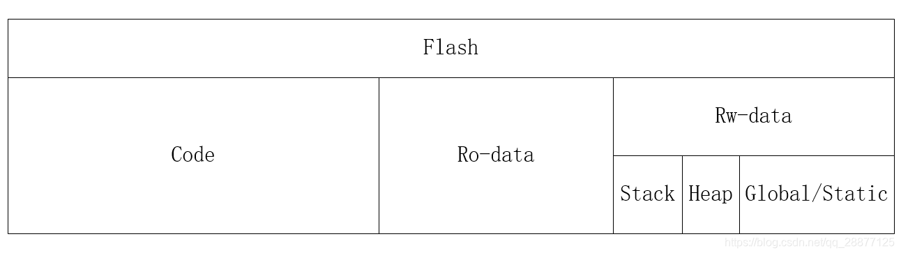
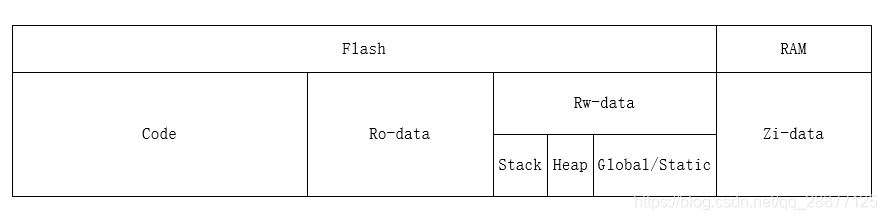
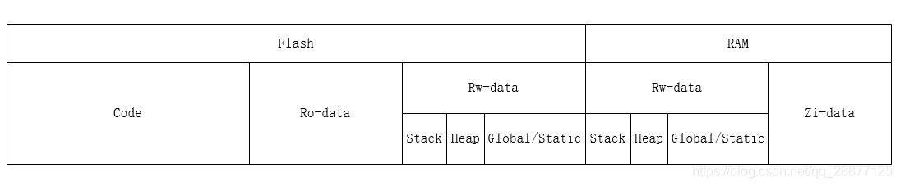

单片机(Microcontroller Unit, MCU)是一种集成电路芯片，它包含了中央处理器(CPU)、存储器(ROM 和 RAM)、输入/输出接口(I/O)等基本功能单元，并集成在同一块硅片上。单片机的基本组成包括：
MCU 就是单片机不多做解释。
我再来总结下，低端的 SOC 本质是 MCU 内核，只是在 51/ARM 内核基础上增加了特定功能外设模块重新封了一款芯片。如果用 MCU 去完成一些特定功能，比如说蓝牙协议，Zigbee 协议，电量计量等等会比较麻烦，研发周期长，稳定性差，成本也更高。
FPGA 的全称为 Field-Programmable Gate Array，即现场可编程门阵列。 FPGA 是在 PAL、GAL、CPLD 等可编程器件的基础上进一步发展的产物，是作为专用集成电路（ASIC）领域中的一种半定制电路而出现的，既解决了定制电路的不足，又克服了原有可编程器件门电路数有限的缺点。简而言之，FPGA 就是一个可以通过编程来改变内部结构的芯片。
需要通过编程即设计硬件描述语言，经过 EDA 工具编译、综合、布局布线成后转换为可烧录的文件，最终加载到 FPGA 器件中去，改变 FPGA 内部的连线，最终完成所实现的功能。
FPGA 相比于单片机、CPU 等集成电路芯片拥有效率更高、功耗更低的特点，但是易于开发程度远远不如单片机、CPU；在数字芯片设计领域，FPGA 虽然相比 ASIC 具有更短的开发周期与开发难度，但是其存在着成本过高、性能较差并且在资源的利用率上远不及 ASIC 等问题，不能真正的替代 ASIC。
DSP（digital signal processor）是一种独特的微处理器，是以数字信号来处理大量信息的器件。其工作原理是接收模拟信号，转换为 0 或 1 的数字信号。再对数字信号进行修改、删除、强化，并在其他系统芯片中把数字数据解译回模拟数据或实际环境格式。它不仅具有可编程性，而且其实时运行速度可达每秒数以千万条复杂指令程序，远远超过通用微处理器，是数字化电子世界中日益重要的电脑芯片。它的强大数据处理能力和高运行速度，是最值得称道的两大特色。
| 芯片 | 结构 | 成本 | 运算能力 |
|---|---|---|---|
| DSP | 哈佛结构 | 价格昂贵 | 高 |
| MCU | 冯诺依曼结构 | 价格低廉 | 低 |
DSP 采用的是哈佛结构，数据空间和存储空间是分开的，通过独立的数据总线在程序空间和数据空间同时访问。而 MCU 采用的是冯诺依曼结构，数据空间和存储空间共用一个存储器空间，通过一组总线连接到 CPU。在对性能要求不是很高的情况下，MCU 还是很具有优势的。
ARM 是 Advanced RISC(精简指令集) Machines 的缩写，是面向低预算市场的 RICS 微处理器。ARM 有比较强的事务管理能力，适合于用来跑跑界面、操作系统，优势体现在控制方面。
FPGA 是 Field Programmable Gate Array(现场可编程门阵列)的缩写，是在 PAL、GAL、PLD 等可编程器件的基础上进一步发展的产物，是专用集成电路中集成度最高的一种。具有静态可重复编程和动态在系统在系统中重构的特性，使得硬件的功能可以像软件一样通过编程修改。
在描述单片机程序时，需要区分"运行时"和"非运行时"。
非运行时的单片机程序在 ROM 内的分布
下图就是通过单片机下载工具烧录到单片机 Flash 里面去之后的 Flash 空间区域分布图：
其中：
而栈区(stack)、堆区(heap)、全局区（静态区）(static)、文字常量区和程序代码区和上面所介绍的 Code、Ro-data 等的关系。
下图是初始化之前的 ROM 和 RAM 中的数据分布：
1、未初始化之前的 RAM 里面所有区域都是随机的值即：Zi-data。
运行时的单片机程序在 RAM 内的分布
下图是初始化之后的 ROM 和 RAM 中的数据分布：
1、初始化的时候会由 Boot 程序（进入 main 函数之前）拷贝 Flash 里面的 Rw-data 区域到 RAM。
下图是初始化之后正常运行时，单片机内 ROM 和 RAM 区域分布图：
单片机程序的 BIN 文件和 HEX 文件的区别
运行时：单片机程序运行起来以后，代码是在 ROM（Nor Flash）上面跑的，数据是在 RAM 上面的，描述的就是 ROM 和 RAM 两个层面。
非运行时：单片机程序没有运行时（没有上电），针对的描述是单片机程序（bin）文件在 ROM（Flash）上的分布。
注意，如果使用 Flash 读取工具从单片机的 Flash 上完整读出来的文件可能是 bin 文件但绝对不是 hex 文件！
ROM 类型:
| 名称 | 全称 | 描述 |
|---|---|---|
| ROM | Read-Only Memory | 只读存储器,内容出厂时固化,不可修改 |
| PROM | Programmable ROM | 可编程只读存储器,一次性可编程,内容不可擦除 |
| EPROM | Erasable Programmable ROM | 可擦除可编程只读存储器,可通过紫外线擦除内容后重新编程 |
| EEPROM | Electrically Erasable Programmable ROM | 电可擦除可编程只读存储器,可电子擦除内容后重新编程 |
| Flash | - | 闪存,一种可电子擦除和编程的非易失性存储器,既可作为 ROM 使用,也可作为 RAM 使用 |
RAM 类型:
| 名称 | 全称 | 描述 |
|---|---|---|
| RAM | Random Access Memory | 随机存取存储器,可读写,断电后内容丢失(易失性) |
| SRAM | Static RAM | 静态随机存取存储器,通过锁存电路保持数据,速度快但功耗高 |
| DRAM | Dynamic RAM | 动态随机存取存储器,通过电容存储数据,速度较慢但功耗低 |
由于单片机应用领域是极端成本为导向的，单片机和操作系统的所处环境不同 RAM 和 ROM 的使用方式也不同。
| 类型 | 操作系统应用程序 | 单片机程序 |
|---|---|---|
| 代码 | RAM | ROM（支持 XIP 的 Nor Flash） |
| 数据 | RAM | RAM（SRAM） |
总结来说就是，单片机的代码是在ROM即支持XIP的Nor Flash上面跑，数据是在RAM上面的，而操作系统应用程序的代码、数据是完全加载到RAM里面运行的（这里不考虑分页、虚拟内存）
| 操作系统应用程序 | 描述 | 对应单片机程序 |
|---|---|---|
| BSS 段–.bss | 未初始化的全局变量、静态变量，一旦初始化就回收，并转存到数据段之中 | Zi-data |
| 代码段–.code | 代码,程序结束的时候系统会自动回收存储在代码段中的数据,内存区域较小 | Code |
| 数据段–.data | 已经初始化的全局变量、静态变量,直到程序结束的时候才会被回收 | Rw-data (global/static) |
| 堆–.heap | 动态分配内存,alloc 出来的对象,需要程序员进行内存管理 | Rw-data (heap) |
| 栈–.stack | 局部变量,自动分配内存,当局部变量的作用域执行完毕之后就会被系统立即回收 | Rw-data (stack) |